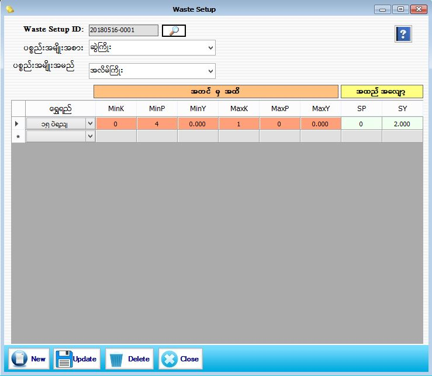

Waste Setup

- Master Setup အောက်မှ Waste အားနှိပ်ပါ။
- ပစ္စည်းအမျိုးအစား ပစ္စည်းအမျိုးအမည်ကို အခြေခံပြီး ရွေရည်အလိုက် အလျော့တွက်ကိုကြိုတင်သတ်မှတ်နိုင်သော ဖြစ်ပါသည်။
- eg:ပစ္စည်းအမျိုးအစား(ဆွဲကြိုး)ပစ္စည်းအမျိုးအမည်(အလိမ်ကြိုး)ဟုရွေးပြီး သတ်ဆိုင်ရာရွှေရည်ရွေးကာ Minimum(K P Y) မှ Maximum(K P Y)အတွင်း သတ်မှတ်လိုသောအလျော့တွက်ကိုဖြည့်ပါ။
- ၄င်းသတ်မှတ်ခဲ့သောပစ္စည်းအမျိုးအစား ပစ္စည်းအမျိုးအမည်အလိုက် အလျော့တွက်သည် Stock Setup (ရောင်းရန်ပစ္စည်း)သတ်မှတ်ရာတွင် Auto ပြပေးမည်ဖြစ်သည်။
- သတ်မှတ်ပြီးသော အလျော့တွက်များအားပြန်လည်ပြင်ဆင်လိုပါက မိမိပြင်ဆင်လိုသော ပစ္စည်းအမျိုးအစားအား ရွေးပြီးပြင်ဆင်နိုင်ပါသည်။
- သတ်မှတ်ပြီးသော အလျော့တွက်များအား Delete လုပ်လိုပါက မိမိ Delete လုပ်လိုသော အလျော့တွက်အား Selection မှတ်ပြီး Delete အားနှိပ်ပြီးDelete လုပ်နိုင်ပါသည်။